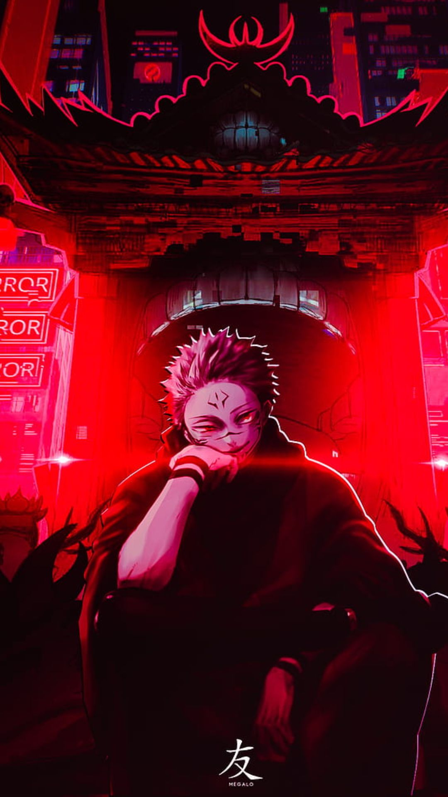

|  | SakunaLegends regarded Sukuna as a vicious imaginary demon with the appearance of four arms and two faces who appeared during the golden era of sorcery one thousand years ago. Having extraordinarily terrifying powers, he would wrack untold havoc throughout the era and would constantly fight the shamans of old with his demonic abilities. As they sharpened their skills against him, although he killed many of them, after giving their all to destroy him, they eventually defeated and killed him, but even in death, his power was too great to be truly killed or destroyed and his 20 indestructible fingers were thus sealed away and branded as high-level cursed objects and were scattered and lost throughout the ages with seals placed to keep their power from influencing the world. He is the undisputed "King of Curses". |